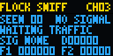

Chapter 2
Flash the board & first boot
Flashing writes the sniffer + injector firmware onto the board. The only thing that trips people up is power — so read the connection step before you plug anything in.
2.1 Connect the board — the power trap
Use a USB-C cable plugged into a USB-A port on your laptop. These boards are powered from the 5 V that a USB-A port supplies. A USB-C-to-USB-C cable into the laptop's USB-C port often will not power or enumerate the board at all — and the failure is silent: no device appears, nothing lights up properly.
2.2 Confirm the laptop sees the board
Plug the board in, then:
ls /dev/ttyUSB* # expect: /dev/ttyUSB0
dmesg | tail # expect: "ch341-uart converter now attached to ttyUSB0"If /dev/ttyUSB0 is there, you are ready to flash. If not, work back through the
checklist in the diagram above.
2.3 Flash the firmware — pick one path
Path A — prebuilt binary (fastest, no toolchain)
Flash the ready-made binary that ships in this package:
esptool --port /dev/ttyUSB0 --baud 115200 write_flash 0x0 \
firmware/prebuilt/flockinator-sniffer-esp8266.binIf flashing fails to start, hold the board's FLASH / GPIO0 button during the first
second of the command, and keep the baud at 115200 for long or marginal cables.
Path B — build from source with PlatformIO
If you installed PlatformIO and want to compile it yourself (and be able to change it):
cd firmware
pio run -t upload # compiles the source and flashes in one stepThe source has no external libraries — PlatformIO downloads the ESP8266 core itself. Building from source produces the same tool as the prebuilt binary.
Path C — browser flasher (no install)
If the facilitator has set up the ESP Web Tools page, open it in Chrome or
Edge, choose the serial port, and flash the prebuilt .bin — handy for a
laptop where you cannot install anything.
2.4 First boot
Open a serial monitor on the board at 115200 baud:
picocom -b 115200 /dev/ttyUSB0 # to quit later: Ctrl-A then Ctrl-X
# or: pio device monitor -b 115200Press the board's RST button. You should see a boot line like this — one JSON object, all on its own line:
{"boot":"flock-combined","fw":"0.7.0-combined","mac":"…","mode":"sniff"}Type HELP and press Enter for the command list. On the OLED you will see the
boot screen, then the live sniffer display:

The OLED is optional. If it stays blank but serial works, carry on — the JSON over serial is the real source of truth, and every screen value is also printed there.
Troubleshooting
| Symptom | Fix |
|---|---|
No /dev/ttyUSB* | USB-A port + a real data cable (5 V); check dmesg. |
Permission denied on the port | Add yourself to dialout and re-login (chapter 1.3), or use sudo. |
| Flash timeout / won't sync | Hold GPIO0 during connect; lower the baud; reseat the cable. |
| Garbage in the monitor | Baud must be 115200. |
| OLED blank, serial fine | The OLED is optional; read the JSON stream. |